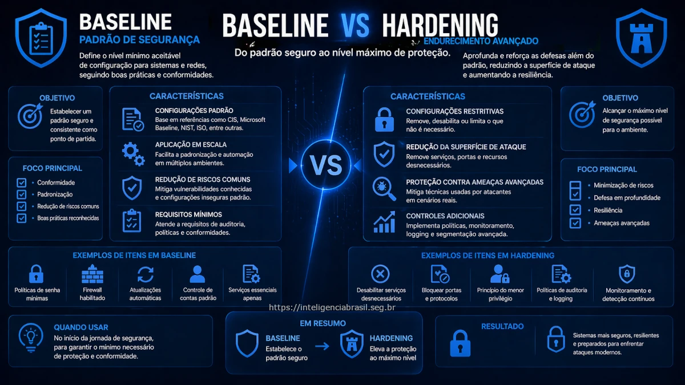

Neste artigo
A maioria das empresas acredita que está protegida porque possui antivírus, firewall ou algum controle básico implementado. No entanto, quando analisamos tecnicamente a infraestrutura, é comum encontrar sistemas expostos, configurações padrão inseguras e ausência de controles fundamentais.
É nesse contexto que surgem dois conceitos essenciais na segurança da informação: baseline e hardening.
Embora frequentemente utilizados como sinônimos, eles representam etapas distintas dentro de uma estratégia de proteção eficaz. Entender essa diferença é o que separa uma segurança superficial de uma abordagem realmente estruturada.
O que são Baseline e Hardening em segurança da informação
Baseline e hardening são práticas complementares que atuam na configuração segura de sistemas, aplicações e ambientes.
Definição de Security Baseline
O baseline de segurança é um conjunto mínimo de configurações seguras que devem ser aplicadas a um sistema antes de colocá-lo em produção. Ele define o padrão inicial de segurança, garantindo que:
- Serviços desnecessários estejam desabilitados
- Configurações padrão inseguras sejam removidas
- Políticas básicas estejam ativas
- Controles mínimos sejam aplicados
O objetivo do baseline é reduzir rapidamente a superfície de ataque e estabelecer um ponto de partida consistente.
Definição de Hardening de sistemas
O hardening vai além do baseline. Trata-se do processo de reforço contínuo da segurança, com ajustes mais específicos, restritivos e adaptados ao contexto do ambiente. Inclui práticas como:
- Restrição avançada de acessos
- Configuração detalhada de serviços
- Segmentação de rede
- Aplicação de controles adicionais baseados em risco
Por que esses conceitos são frequentemente confundidos
A confusão ocorre porque ambos tratam de configuração segura. No entanto:
- Baseline é padronização
- Hardening é aprofundamento
Ignorar essa diferença leva empresas a acreditar que estão protegidas quando apenas aplicaram o básico.
Principais diferenças entre Baseline e Hardening
Embora relacionados, baseline e hardening possuem objetivos e níveis de profundidade distintos.
Baseline como ponto de partida
O baseline é:
- Rápido de implementar
- Reutilizável
- Baseado em boas práticas gerais
Ele serve como base para qualquer ambiente, independentemente do nível de maturidade.
Hardening como camada avançada de proteção
O hardening é:
- Específico para o ambiente
- Baseado em análise de risco
- Mais complexo de implementar
Ele leva em consideração fatores como criticidade do sistema, exposição e tipo de dado tratado.
Impacto de cada abordagem na redução de risco
Impacto na segurança
- Baseline: reduz riscos básicos e imediatos
- Hardening: reduz riscos avançados e direcionados
Ambos são necessários, mas atuam em níveis diferentes.
Onde aplicar Baseline e Hardening na prática
Essas práticas devem ser aplicadas em toda a infraestrutura, não apenas em servidores.
Aplicação em sistemas operacionais
- Remoção de serviços desnecessários
- Configuração de permissões
- Atualizações e patches
Segurança em ambientes de nuvem
- Controle de acessos e identidades
- Configuração de storage e bancos de dados
- Segmentação de rede
Ambientes cloud mal configurados são hoje uma das principais causas de vazamentos. Para uma abordagem completa, consulte nosso artigo sobre segurança em cloud.
Hardening em aplicações e APIs
- Validação de entrada
- Controle de autenticação
- Proteção contra vulnerabilidades conhecidas
Proteção de endpoints e dispositivos
- Políticas de segurança
- Controle de execução
- Monitoramento contínuo
Frameworks e padrões utilizados para Baseline e Hardening
A aplicação de baseline e hardening deve seguir referências reconhecidas, evitando decisões arbitrárias. Conheça também outros frameworks de cibersegurança relevantes.
CIS Benchmarks como referência de configuração segura
Um dos padrões mais utilizados globalmente, fornece guias detalhados de configuração segura para diversos sistemas.
Diretrizes do NIST para segurança de sistemas
O NIST define diretrizes amplas para segurança, incluindo gestão de riscos e controles técnicos.
ISO 27001 e controles relacionados
Focado em gestão de segurança da informação, ajuda a estruturar processos e governança. Veja nosso guia de implementação da ISO 27001.
Uso de padrões para auditoria e compliance
Esses frameworks são frequentemente utilizados como base para auditorias e avaliações de conformidade.
Benefícios e limitações de cada abordagem
Benefícios do uso de baseline de segurança
- Implementação rápida
- Padronização
- Redução imediata de riscos
Vantagens do hardening avançado
- Proteção mais robusta
- Adequação ao contexto
- Redução de ataques direcionados
Limitações e riscos de configuração inadequada
- Baseline pode ser genérico demais
- Hardening pode impactar operação se mal aplicado
Equilíbrio entre segurança e usabilidade
Ponto-chave
O maior erro é escolher entre um ou outro. A segurança real vem da combinação dos dois. O baseline garante o mínimo; o hardening eleva a proteção ao nível adequado para o risco do ambiente.
Como implementar Baseline e Hardening na sua empresa
Uma implementação eficaz exige método e priorização.
Etapas para definir um baseline de segurança
- Escolher frameworks de referência
- Adaptar ao ambiente
- Documentar padrões
Como aplicar hardening de forma progressiva
- Avaliar riscos específicos
- Ajustar configurações progressivamente
- Validar impacto operacional
Automação de configurações seguras
Ferramentas de automação ajudam a garantir consistência e escala, especialmente em ambientes cloud e DevSecOps.
Monitoramento e validação contínua
Configuração segura não é permanente. Mudanças no ambiente podem reabrir vulnerabilidades. A gestão de vulnerabilidades contínua é essencial para manter a eficácia dos controles.
Erros comuns ao aplicar Baseline e Hardening
Aplicar baseline genérico sem adaptação
Aplicar padrões sem adaptação pode gerar falsa sensação de segurança.
Hardening excessivo que impacta operação
Configurações muito restritivas podem quebrar aplicações e impactar operação.
Falta de testes após implementação
Alterações sem validação podem gerar indisponibilidade.
Ausência de monitoramento contínuo
Sem acompanhamento contínuo, controles perdem eficácia com o tempo.
Considerações finais
Baseline e hardening não são alternativas, são etapas complementares de uma estratégia de segurança madura.
Empresas que aplicam apenas configurações básicas permanecem expostas a ataques mais sofisticados. Já aquelas que evoluem para hardening estruturado conseguem reduzir significativamente sua superfície de ataque.
A diferença entre estar aparentemente seguro e estar realmente protegido está na profundidade da implementação.
Perguntas Frequentes
Baseline é o conjunto mínimo de configurações seguras aplicadas antes de um sistema entrar em produção. Hardening vai além, com ajustes mais restritivos e específicos baseados em análise de risco. Baseline é padronização; hardening é aprofundamento.
Tecnicamente sim, mas não é recomendado. Sem um baseline definido, não há referência clara do que constitui a configuração mínima segura. Isso dificulta a priorização e pode gerar inconsistências entre ambientes.
Pode impactar se aplicado sem planejamento. Configurações muito restritivas podem afetar funcionalidades ou desempenho. Por isso é essencial validar cada ajuste em ambiente de testes antes de aplicar em produção.
Realize uma avaliação comparando suas configurações com frameworks como CIS Benchmarks ou NIST. Identifique gaps entre o estado atual e o desejado, e estabeleça um plano de adequação progressiva com monitoramento contínuo.
Fontes e referências técnicas
- CIS Benchmarks - Center for Internet Security
- NIST SP 800-123 - Guide to General Server Security
- NIST SP 800-53 - Security and Privacy Controls
- ISO/IEC 27001 - Information Security Management
- OWASP - Configuration and Deployment Management Testing
- DISA STIGs - Security Technical Implementation Guides
Precisa de ajuda com Baseline e Hardening?
Oferecemos consultoria especializada em configuração segura: diagnóstico de infraestrutura, definição de baselines, implementação de hardening e monitoramento contínuo.
Falar com Especialista